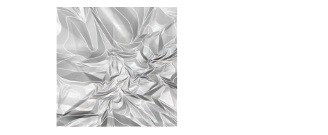

Самостоятельная работа
Работа с градиентом. Эффект мятой бумаги.
Обложка музыкального альбома.
Фон
1. Новый документ 300х300. Фон - белый. Новый слой залить черным.
2. Инструмент Градиент. В палитре параметров установить режим Mode - Difference (различный). Форма градиента - линейная (Linear Gradient).
3. Продолжаем этот прием раз 20 в произвольных направлениях:
4. Filter - Stylize - FindEdges (Фильтр - Стилизация - Выделить края).
5. Инвертируем цвета: Image - Adjustments - Invert (Изображение - Настройки - Инверсия).
6. Добавляем цвет: Image - Adjustments - Hue/Saturation (Изображение - Настройки - Цветовой тон/Насыщенность). Включить флажок Colorize (Тонировать), Hue (Цветовой тон) = 254,Saturation (Насыщенность) = 100.